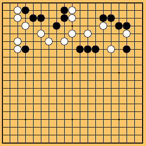

Home Page
F.A.Qs
Statistical Charts
Past Contests
Scheduled Contests
Award Contest
| Online Judge | Problem Set | Authors | Online Contests | User | ||||||
|---|---|---|---|---|---|---|---|---|---|---|
| Web Board Home Page F.A.Qs Statistical Charts | Current Contest Past Contests Scheduled Contests Award Contest | |||||||||
|
Language: Go
Description  Go is played on a square board with an odd number of vertical and horizontal lines. The usual board sizes are 9x9, 13x13 and 19x19. But we'll assume the size in nxn for 3 ≤ n ≤ 19. Black and White alternately play stones on the intersection between two lines. Black starts. At any time one player may pass – not play a stone – but if both players pass the game ends. We'll denote playing a stone by P(x,y) where P is either B (for Black) or W (for White) and (1−n)/2 ≤ x,y ≤ (n−1)/2 gives the grid position of the stone to be played. The centre intersection of the board has coordinates (0,0). The rules of Go are reasonably straightforward, but the nuances of strategy make it an extremely challenging game. You are to use the following rules.
Input The input consists of several test cases. Each test case begins with a line containing n – the size of the board – and m – the number of stones placed in the game. m lines follow, each giving a placement in the format above. Note that m counts only stone placements – passes may result in two consecutive placements by the same player. You may assume that each move is legal. A line containing 0 0 follows the last test case. Output For each test case, output a line with two numbers: Black's score followed by White's score. Sample Input 7 6 B(-2,-2) W(2,2) B(-2,-3) W(2,3) B(-3,-2) W(3,2) 7 6 B(-2,-3) W(-3,-3) B(-2,-2) W(3,2) B(-3,-2) W(2,3) 0 0 Sample Output 1 1 2 1 Source |
[Submit] [Go Back] [Status] [Discuss]
All Rights Reserved 2003-2013 Ying Fuchen,Xu Pengcheng,Xie Di
Any problem, Please Contact Administrator